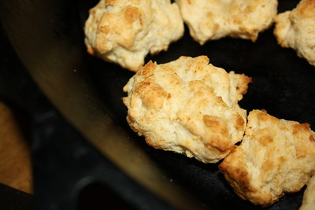

Drop Biscuits

Description
Drop biscuits are a simple biscuit common to southern cooking. Rather than folding butter into the dough as in rolled biscuits, drop biscuits involve cutting butter into the dough. Consequently, drop biscuits are much faster to make.
Ingredients
- 2 cups flour
- 1 tbs baking powder
- 1 1/4 tsp kosher salt
- 1 stick butter
- milk
Steps
- Preheat oven to 450F
- In a large bowl, whisk together flour, baking powder, and salt.
- Cut the butter into small pieces and add them into the flour. Crush the butter into the flour using your fingers or a fork until the flour has a coarse, pebbley texture.
- Add 3/4 cup of milk to the flour mixture and mix. The mixture should become a thick batter. If the mixture is too dry, add more milk.
- Scoop 1/4 cup mounds of the mixture onto a baking sheet, 1 inch apart
- Bake for 18-22 minutes until golden